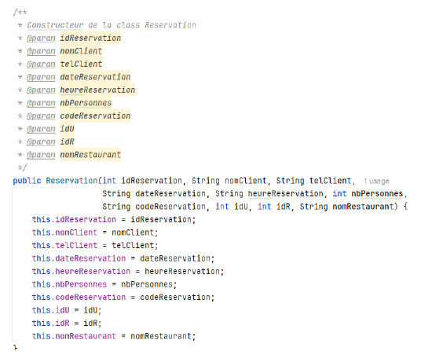
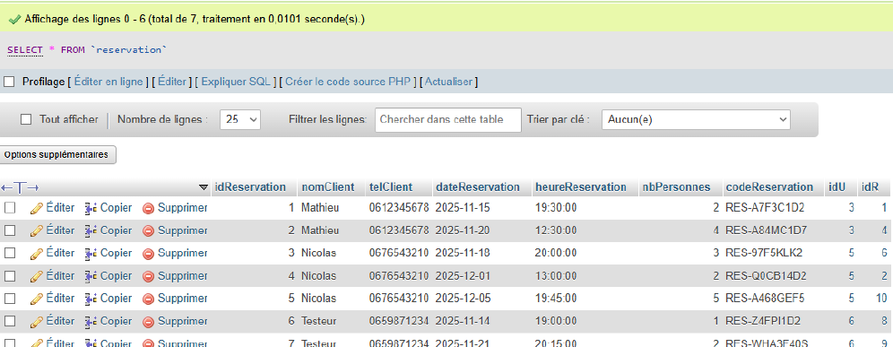

Dans le cadre du Projet 2 Android – Itération 3, j’ai travaillé sur le Ticket 0 qui consistait à créer la classe Reservation. Cette classe permet de représenter les réservations de l’application mobile et fait le lien entre la base de données et l’application Android.
J’ai développé cette classe sur la branche iteration3_ticket0. Elle reprend fidèlement les champs de la table reservation de la base de données.
La classe Reservation contient :
Le constructeur permet de créer un objet Reservation à partir des données récupérées depuis la base de données, assurant ainsi une bonne cohérence entre la couche de persistance et la logique métier de l’application.
Ce travail constitue une base essentielle pour la gestion des réservations dans l’application Android, notamment pour l’affichage, la création et la manipulation des réservations par les utilisateurs.
Et qui permet de gérer les réservations dans l'application Android et je me suis aidé de ces attributs pour créer les objets Reservation dans l'application :
